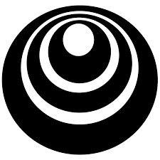

I am an AI Researcher currently working on a multimodal learning based project with researchers at UVA-LINK Lab. I am broadly interested in advancing science and intelligence, and where the ideas involve probability, programs and/or neural nets.
I like to work simultaneously on fundamental research as well as systems to accelerate my research in terms of systems which includes Swarm Intelligence & Cellular Automaton. Previously, I was an undergraduate student at UIU where my Final Year Design Project was supervised by Chowdhury Rafeed Rahman. I also worked as a Research Assistant at Dept. of CSE, UIU on Bengali OCR System & in CSIR-CDRI as a Research Intern.
My current involvements are the following:
- participating in Hateful Memes competition hosted by FB & DrivenData
- participating in Halite competition by Two Sigma.
Publications
Preprints
Dual phase convolutional neural network based system aimed at small rice grain dataset for disease identification
Tashin Ahmed, Chowdhury Rafeed Rahman, Md. Faysal Mahmud Abid
Automatic Signboard Detection from Natural Scene Image in Context of Bangladesh Google Street View
Md. Sadrul Islam Toaha, Chowdhury Rafeed Rahman, Sakib Bin Asad, Tashin Ahmed, Mahfuz Ara Proma, S.M. Shahriar Haque
Classification and understanding of cloud structures via satellite images with EfficientUNet
Tashin Ahmed, Noor Hossain Nuri Sabab
Competitions
Completed
SIIM-ISIC Melanoma Classification
Applied EfficientNet x ensembling.
Ranked top 23%.
Jigsaw Multilingual Toxic Comment Classification
Applied Custom CNN based architecture.
Ranked top 25%.
Plant Pathology 2020 - FGVC7
Applied EfficientNet x ensembling.
Ranked top 26%.
 M5 Forecasting - Accuracy
M5 Forecasting - Accuracy
Estimation of the unit sales of Walmart retail goods
Ranked top 58%.
ALASKA2 Image Steganalysis
Applied various EfficientNet architecture with hyperparameter optimization.
Ranked top 62%.
 TReNDS Neuroimaging
TReNDS Neuroimaging
Multiscanner normative age and assessments prediction with brain function, structure, and connectivity. Applied SVM x RAPIDS.
Ranked top 66%.
 Bengali.AI Handwritten Grapheme Classification
Bengali.AI Handwritten Grapheme Classification
Applied EfficientNet x ensembling.
Ranked top 70%.
Starter
 Connect X
Connect X
Applied Proximal Policy Optimization (PPO)
Ranked top 30%.
 Digit Recognizer
Digit Recognizer
Applied custom CNN.
Ranked top 10%.
 Real or Not? NLP with Disaster Tweets
Real or Not? NLP with Disaster Tweets
Applied Simple Logistic Regression model.
Ranked top 20%.
Housing Prices Competition
Ranked top 15%.
Ongoing
Halite by Two Sigma
Currently top 10%.
Bronze tier.
Hateful Memes
Multimodal (image + text) competition.
Currently at 89th position.
 I’m Something of a Painter Myself
I’m Something of a Painter Myself
Used GANs to create art.
Currently top 67%.
Projects
Games & Simulations
 TETRIS
TETRIS
Single player Tetris game created in C++ & Java both. Graphics added for both version. 10 different levels are created depending on play time with addictive scoring system.
 LIFE
LIFE
Zero-player game for observing cellular automaton & evaluation of their growth. Recreation of Conway's game of Life using C language & OpenGL.
 MAZE
MAZE
A maze creator algorithm which creates random mazes using OLC Engine & have GUI written in C++ comes with automated maze solver plus a game to solve maze puzzle. Both program tested on TURBO C++.
Courses
Hosted by Coursera

DeepLearning.AI Tensorflow Developer: Professional Certificate
deeplearning.ai
Grade: 93.785%
 Data-driven Astronomy
Data-driven Astronomy
University of sydney
Grade: 89%